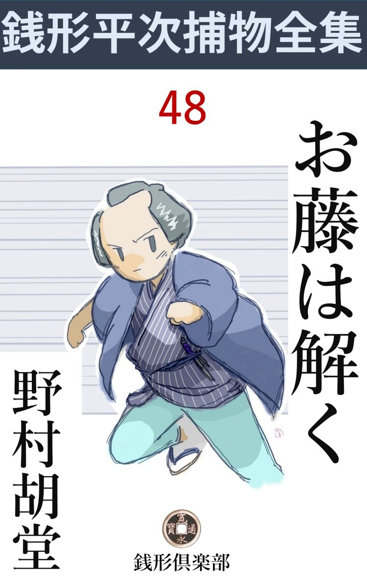
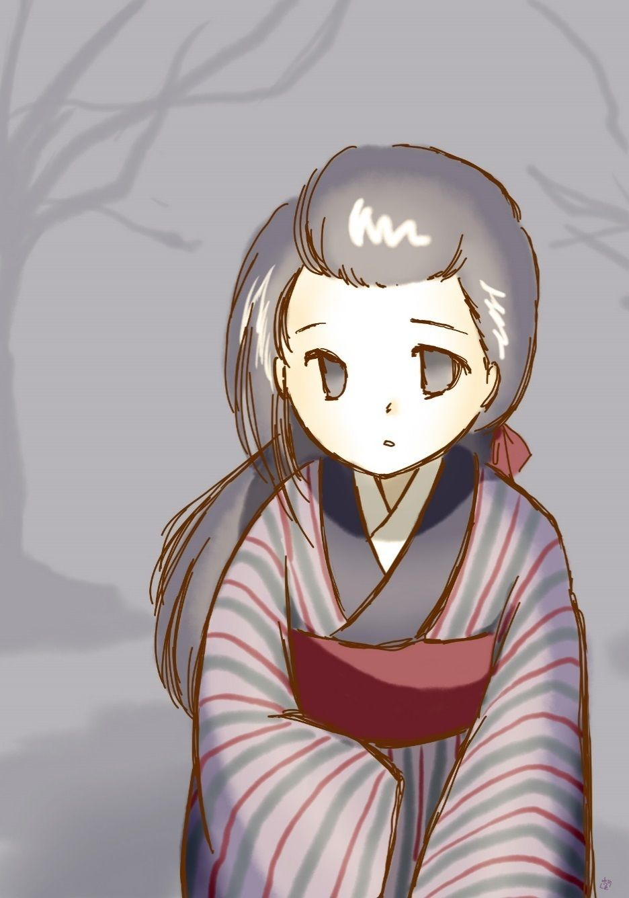

| お藤は解く: 銭形平次捕物全集第48話 (銭形倶楽部) | |
| 野村胡堂 | |
| ZENIGATA CLUB (2018) | |

一
「平次、頼みがあるが、訊いてくれるか」
南町奉行配下の吟味 与力 笹野新三郎は、自分の役宅に呼び付けた、銭形の平次にこう言うのでした。
「へエ、------旦那の仰しゃることなら、否 を申す私ではございませんが」
平次は縁側に踞 まったまま、岡っ引とも見えぬ、秀麗な顔を挙げました。笹野新三郎には、重々世話になっている平次、今さら頼むも頼まれるもない間柄だったのです。
「南の御奉行が、事をわけてのお頼みだ、------お前も聞いたであろう、深川木場の甲州屋万兵衛が今朝人手に掛って死んだと言う話を------」
「ツイ今しがた、溜 にいる八五郎から耳打をされました。あの辺 は洲崎の金六が縄張で------」
「それも承知で頼みたい。------甲州屋万兵衛は町人ながら御奉行とは別 懇 の間柄、一日も早く下手人を挙げたいと仰しゃる------金六は一生懸命だが、何分にも老人で、届かぬ事もあろう、すぐ行ってくれ」
「畏まりました」
吟味与力に頼まれては、嫌も応もありません。平次は不本意ながら、大先輩洲崎の金六と手柄争いをする積りで、木場まで行かなければならなかったのです。
「八、手前が行くと目立っていけねえ、神田へ帰るが宜い」
永代まで行くと、後ろから影の如く跟 いて来る、子分の八五郎に気が付きました。
「帰れと言えば帰りますがね、親分、あっしがいなきゃア不自由なことがありますよ」
八五郎の大きな鼻が、浅い春の風を一パイに吸って悠々自惚心を楽しんでいる様子です。
「馬鹿、大川の鷗 が見て笑っているぜ」
「鷗で仕合せだ、------この間は馬に笑われましたぜ。親分の前だが、馬の笑うのを見た者は、日本広しといえども、たんとはあるめえ」
「呆 れた野郎だ、その笑う馬が木場にいるから、甲州屋へ行く序 でに案内しようと言う話だろう、落 はちゃんと解っているよ」
「へッ、親分は見通しだ」
八五郎はなんとか口実を設けては、親分の平次に跟いて行く工夫をしているのです。
木場へ行くと、町内大きな声で物も言わない有様で、その不気味な静粛 の底に、甲州屋の屋根が、白々と昼下りの陽に照されておりました。
「お、銭形の」
何心なく表の入口から顔を出した洲崎の金六は、平次の顔を見ると、言いようもない悲愴な表情をするのでした。
「ちょいと見せて貰いに来たよ、八の野郎の修業に------」
平次はさり気ない笑顔を見せます。
「笹野の旦那の言い付けじゃねえのか」
「とんでもない、旦那は兄哥 の腕を褒めていなさるよ、年は取っても、金六のようにありたいものだって」
「おだてちゃいけねえ」
金六は漸 くほぐれたように笑います。近頃むずかしい事件と言うと、八丁堀の旦那方が、すぐ平次を差向けたがるのは相当岡っ引仲間の神経を焦 立 たせていたのです。
「俺の手柄なんかにする気は毛頭ねえ。どんな事だか、ちょいと教えて貰えめえか」
「それはもう、銭形のが知恵を貸してくれさえすれば、半日で埒 が明くよ。証拠が多過ぎて困っているところなんだから」
根が人の良い金六は、自分の手柄にさえケチを付けられなければ------と言った心持で、気軽に平次と八五郎を案内しました。
店の中は、ムッとするような陰 惨 さ、この重っ苦しい空気を一と口呼吸しただけで、人間は妙に罪悪的になるのではあるまいかと思うようです。
二
木場の大旦那で、万両分限 の甲州屋万兵衛は、今朝、卯 刻 半 から辰刻 までの間に、風呂場の中で殺されていたのです。
取って五十、江戸一番の情 知りで、遊びも派手なら商売も派手、芸人や腕のある職人を可愛がって、四方八方から受けの宜い万兵衛が、場所もあろうに、自分の家の風呂場で、顔を洗ったばかりのところを、剃 刀 で右の頸筋を深々と切られ、凄まじい血の中に崩折れて死んでいたのです。
声を立てたかも知れませんが、風呂場は二重戸で容易に外へは聴えず、下女のおさめが行って見て、始めて大騒動になったのでした。
家族というのは本妻が五年前に死んで、奉公人からズルズルに直った妾 のお直、------三十五という女盛りを、凄まじい厚化粧に塗り立てているのを始め、先妻の間に出来た一粒種の伜 、万次郎と言って二十三、親父の万兵衛が顔負けのする道楽者と、主人万兵衛の弟で、店の支配をしている伝之助という四十男、それに、番頭の文次を始め、手代小僧、十幾人の多勢です。
「どんな証拠があるんで、金六兄哥 」
風呂場の血潮の中から、拾った剃刀 や、さっき居間に運んだばかりの、万兵衛の死体を見ながら、平次はまず金六に当って見ました。
「人は見掛けに寄らないと言うが、------こんな騒ぎがあって驚いたことは、甲州屋の家の者で、主人の万兵衛を殺し兼ねない者が四五人はいるぜ」
「へエ------」
「世間体は良い男だったが、通人 とか、わけ 知りとか言う者は、大方こうしたものだろう。お互に野暮ほど有難いものはねえ」
金六はすっかり感に堪えた姿です。
「どうしたんだ、洲崎の兄哥」
「妾のお直は二三日前から、出るの引くのと言う大 喧嘩 だ。------万兵衛が他に女が出来て、それを家に入れようとしているんだ」
「なるほど」
「伜の万次郎は恐ろしい道楽者で、ゆうべも帰らなかったと言うが、今朝の騒 の後で気が付くと、二階の自分の部屋へ入って、グウグウ寝ていた」
「それから」
「番頭の文次は血の付いた着物をそっと洗っているところを、下女のおさめに見付けられ------」
「------」
「主人の弟の伝之助は、店を支配しているから、万兵衛が死ねば何万両の身代が自由になる、それに、内々の借金もかなり持っているそうだ、------第一、動きの取れない証拠は、万兵衛を殺した剃刀はこの伝之助の品で、家中の剃刀では一番よく切れる。伝之助は、逢って見れば解るが、------恐ろしい毛深い男で、三日も髯 をあたらないと山賊みたいになるから、自分の剃刀だけは人に使わせないように、町内の髪 結 床 の親方に磨 がせて、大切にしまい込んであるのさ」
「フーム」
「その外、一番先に死骸を見付けたのは下女のおさめで、その時はまだ万兵衛は息はあったと言うから、これとても下手人でないという証拠は一つもない」
「------」
「もう一人、万兵衛の幼 な友達で、今は蒔絵師 の名人と言われる、尾張町の藤吉の娘、お藤がいる。これは並大抵でない綺麗な娘だから、気の多い万兵衛がちょっかいを出していたかも知れない」
「その娘が何だって、こんな家へ来ているんだろう」
「行儀 見習 という名義だ、------俺の娘なら、こんな家で行儀なんか見習って貰いたくはねえよ」
「有難う。それで大方判った。風呂場を見て、それから一人一人逢わせて貰おうか」
平次は死体の側を離れてまだよく掃除 していない風呂場を見ました。
三
中は惨憺たる碧血 、------検死が済んだばかりで、洗い清める暇もなかったのでしょう。
金六が説明した通り二重戸でここで大概の物音をさしても、店や、お勝手へは聴えなかったのも無理はありません。万兵衛は通人らしくたしなみの良い男で、外出でも思い立って、髯を剃 りに入ったところを、後ろから忍び寄った曲者に、逆 手 に持った剃刀で右の頸筋をやられたのでしょう。
風呂場の構えは大町人にしても立派で、外からのたった一つの入口は、用心よく内 鍵 で厳重に締めてあります。
「外から入りようはないな」
平次は自分へ言い聴かせるように駄目を押しました。
「その通りだ、下手人は家の中にいた者だ」
金六も解りきったことを合 槌 打ちます。
「親分、------今朝、朝飯が済んでから半刻の間、主人の弟の伝之助はどこにいたか誰も知りませんぜ」
八五郎は早くも別の方面に手を付けて、最初の報告を持って来ました。
「よしよし、悪い事をする奴に限って、自分のいた場所などを、念入りに人に知らせておくものだ。伝之助は、馬鹿でなきゃア、潔 白 だろう」
「へエ------」
こう言われると、勢込んだ八五郎もツイ気が抜けます。
「伜の今朝帰った姿を誰も見た者がないと言ったが、もう一度よく聴いてくれ。それから、みないつもの通り仕事をするように、と言ってくれ。あっちこっちへ固まって、コソコソ話しているのは、褒 めたことじゃねえ」
平次はそう言いながら、まだ念入りに家の中を見廻っております。
「支配人の伝之助は、兄哥に逢いたがっているぜ」
金六は店の方を指さしましたが、
「もう少し、------今度は外廻りを見よう」
庭下駄を突っかけて外へ出ると、庭から、土蔵のあたり、裏木戸の材木を漬けた堀、夥 しい材木置場から、元の庭へ帰って来ました。
「伜の部屋はどこだろう。------どこの家でも、息子は一番良い部屋を取りたがるものだが------」
「あれだよ」
金六の指したのは、裏木戸から入って、見上げる形になった二階でした。厳重な格子がはまって、人のいる様子もありません。
「当人はどこにいるだろう」
と平次。
「親父が死んじゃ遊びにも出られない。つまらなそうな顔をして、先刻 まで店にいたが」
何と言う嫌な空気の家でしょう。
「銭形の親分さん、御苦労様でございます。洲崎の親分さんにもお願いしましたが、何とかして一日も早く、兄の敵を討って下さいまし」
たまり兼ねた様子で、主人の弟------支配人の伝之助は庭に迎えました。なるほど四十三四の青 髯 、人相は凄まじいが、その割には腰の低い男です。
「お前さん、いつ髯を剃 りなすったえ」
平次の問は唐突で予想外でした。
「へエ、三日前で御座いました。こんな騒ぎがなければ、今日は剃 る筈でしたが------」
伝之助は恐縮した姿で頤 を撫でております。
「剃刀はどこへ置きなさるんだ」
「風呂場の剃刀箱の中に入れております」
そんな事を訊いたところで、何の足しになりそうもありません。
四
次に平次が逢ったのは、番頭の文次でした。三十七八の狐のような感じのする男で、商売は上手かは知りませんが、決して人に好 印象 を与えるたちの人間ではありません。
「着物の血を洗っていたと言うが、そんな事をしちゃ、反って変に思われるだろう」
平次の言葉は峻烈 です。
「へエ、------それも存じておりますが、血が付いていちゃ、気味が悪う御座います」
「どうして付いた血だ」
「主人を介抱しようと思いましたので、へエ」
こう言ってしまえば何でもありませんが、平次は一脈の疑念が残っているらしく、番頭が向うへ行ってしまうと、ガラッ八に言い付けて、文次の身持と、金の出入、借金、貯蓄などのことを調べさせました。
三番目は妾のお直。
「親分さん、お手数を掛けて、本当に済みませんねえ」
主人が死んでも、化粧だけは忘れなかった様子で、帯の上を叩いて、こう流し眼に平次を見ると言った、世にも厄介な人種です。
「お前さん、主人と仲が悪かったそうだね」
と平次。
「とんでもない、------主人は本当によく可愛がって下さいましたよ」
「二三日前から、出すとか、出るとか言う話があったそうだが」
「御冗談で------三月になったら箱根へ湯治 に行く約束はしましたが、その話を小耳に挟んで、とんだことを言い触らした者があるのでしょう。本当に奉公人達というものは------」
自分が元奉公人だったお直は、二た言目には、このせりふ が出るのでした。
「主人から貰う手当はどうなっているんだ」
「そんなものは御座いません。給金を貰えば奉公人じゃありませんか、------主人はよくそう申しました。この家をお前の家と思え、不自由なことや、欲しいものがあったら、何でも言うように------って、ホ、ホ」
隣の部屋に、その主人万兵衛の、怨 を呑んだ死体のあるのさえ、お直は忘れている様子です。
最後に店から呼出されたのは息子の万次郎でした。------不眠と不養生と、酒 精 で、眼の血走った、妙に気違い染みた顔は、馴れない者には、決して好い感じではありません。
「お前さんの、昨夜帰った時刻は、誰も知らないようだが、本当のところは、何 刻 だったろう」
平次は、穏やかですが、突っ込んだ物の訊きようをします。
「今朝でしたよ、辰刻 （八時）頃でしょうか------」
「誰も見た者がないのはおかしいが------」
「親父が死んで、大騒動していたんで、気が付かなかったのでしょうよ。------私は真っすぐに二階へ行って、昨夜から敷きっ放しの床の中に潜 り込んでしまいました」
「誰にも見られないと言うのは可怪しい。それに、店にはお前さんの履物もなかったようだが」
平次は一と押し押してみました。
「雪駄 はいつでも二階へ持って行きますよ。店へ置くと誰かに突っかけられて叶いません」
それはありそうなことでしたが、二階へ雪駄を持って行くのは、決して良い趣 味 ではありません。
が、金六が飛んで行って見ると、雪駄------新しい泥の着いたのが、二階の格子の内に、間違いもなく裏金を上にして並べてありました。
丁度そんな事をしているところへ、ガラッ八の八五郎が帰って来たのです。
「親分、大変なことを聞込みましたよ」
「何だ、八？」
「支配人の伝之助が、小僧を使にやって、三百両の現 金 を持出していますよ」
「何時だ、それは？」
「今日、------それも二た刻ばかり前」
「フーム」
「日頃、兄の物真似で、遊びが激しいから借金こそあれ、金のある筈はない伝之助です。それが今日に限って三百両も持出させたのは不思議じゃありませんか」
これは幾通りにも考えられますが、いちばん通俗な解釈は、騒ぎの大きくなる前に、兄を殺してくすねて 置いた金を持出させ、火の付くように催 促 されている借金の一と口だけでも、免れようと言うのでしょう。一番小さい小僧に持出さしたのは思い付きですが、権柄ずくで物を言い付ける習慣が付いているので、うっかり心付けをしておかなかったのが、ガラッ八如きにしてやられる、重大な失策になったのです。
「野郎、神妙にせい、兄などを殺して、太てえ奴だ」
洲崎の金六は、もう伝之助を引立てて来ました。まだ縄を打ったわけではありませんが、物馴れた鋼鉄のような手が伝之助の手首をピタリと押えているのです。
五
「あッ、それは間違いです。叔父さんは、下手人じゃありません」
美しい声------少しうわずっておりますが、人の肺腑 に透るような、一番印象づける美しい声と共に、十八九の娘が飛び込んで来ました。
「お前はお藤、------こんな場所へ入っちゃならねえ」
金六はそう言いながらも、眼は言葉の調子を裏切って、微笑を湛 えております。この娘だけが、甲州屋中での、美しい明るい存在だったのです。
「でも、見す見す間違いをするのを見てはいられません」
娘は全身を金六と平次の前へ晒 しました。死んだ主人万兵衛の幼友達、江戸一番と言われた蒔 絵 の名人、尾張町の藤吉の娘のお藤というのはこれでしょう。
若く美しく健康と幸福を撒き散らして歩くような娘で、この陰惨な家には、一番似つかわしくない存在でもあります。それだけにまた、主人万兵衛が可愛がってもいたのでしょう。
「間違いとは何だ、お藤」
と金六。
「でも、伝之助叔父さんは店中で知らぬ者のない左利きで、箸と筆を右に持つのが不思議な位です。旦那様の疵 は、右の頸筋で、後ろから右手に剃刀を持って斬ったのでしょう。------そんな事が出来るものですか、伝之助叔父さんは、右手に刃物を持つと、紙も切れない位なんです」
「------」
「それに、伝之助叔父さんはあの時、土蔵 の中に入っていました」
「えっ、お前はどうしてそれを？」
驚いたのは金六------いや、それよりも驚いたのは伝之助自身でした。
「朝の御飯が済むと、そっと入って、半刻ばかり何かしていました。多分、お金を取出したのでしょう。金箱の鍵はむずかしいから、旦那でないと、なかなか開かないそうです」
お藤の言葉には、寸毫 も疑いを挾む余地はありません。
「それは本当か、伝之助」
と金六。
「面目次第も御座いません。------今日に迫った内証の払い、どう工面しても三百両とは纏 らなかったので、兄には済まないと思いましたが、朝の忙しいところを狙って、そっと蔵の中に忍び込み、違った鍵と釘で大骨折りで金箱を開け、三百両取出したに相違ございません。その証拠は、開けるにはどうやら開けましたが、あとを閉める工夫が付かないので、金箱はそのまま錠 をおろさずにあります」
打ち萎 れた伝之助に嘘がありそうもありません。
「三百両はどこへやった」
「そのうちに兄が殺されて、家中が騒ぎになりました。金を持っていると疑われる基 ですが、私が出掛けるわけにも参りません。工 夫 に余って、口の堅い、一番小さい小僧に八幡前まで持たしてやりました。------金を取出したのは悪う御座いますが、兄を殺 めるような私ではございません」
何と言うことでしょう。平次の明智を働かせるまでもなく、たった十九のお藤が、即座に伝之助に掛る疑いを解いてしまったのでした。
次は、誰でしょう。
六
「親分、この野郎が逃出しましたよ」
ガラッ八の八五郎が、番頭の襟髪を取って引立てて来たのはもう申刻 を廻る頃でした。
「何だ、文次じゃないか」
金六は飛び付くと、八五郎の手からもぎ取るように、その顔を挙げさせます。
「------」
青いやるせ ない顔と、狐のようなキョトキョトした態度は、金六の心証を、最悪の方面へ引 摺 り込みます。
「何処へ逃げる積りだ、------手前 覚えがあるだろう」
「------」
「白状して、お上のお慈悲を願え、馬鹿野郎」
金六の腕は、腹立紛れに、文次の胸倉を小突き廻します。
「私は何にも知りません」
「知らない者が逃出すかい、太い野郎だ、------着物の血を洗ったと聞いたときから変だとは思ったがまさか逃出すとは思わなかった。とんでもねえ奴だ」
金六はすっかりムキになります。
「金六兄哥 、その番頭は少し臆病過ぎはしないか、------顫えてるじゃないか」
平次は注意しましたが、金六いっかな聴くことではありません。
「芝居だよ、これは。悪者もこれくらい劫 を経ると、いろいろな芸当をする」
金六は双手を掛けてさいなみ始めました。
「親分さん、------こんな事を言っちゃ悪いでしょうか」
お藤はたまり兼ねた様子で、薄暗い部屋の中へ、邪 念 のない------が、おろおろした顔を出します。
「お藤さん、構わないから、思い付いた事はみな言って見るが宜い、------とんだ人助けになるかも知れない」
平次は精一杯の柔かい調子で、この聡明そうな処女 を小手招ぎました。
奉公人にしては贅沢な銘仙の袷 、赤い鹿の子の帯を締めて洗ったばかりらしい多い髪を、無造作に束ね、脅 えた小鳥のように逃げ腰で物を言う様子は、不思議な魅力を撒き散らします。
「文次どんは下手人じゃありません。お店から一寸も動かなかったんですもの」
「それだけか」
「それに、洗った着物の血は裾 へ付いておりました。後ろから旦那を斬ったのなら、返り血は顔か肩か胸へ付く筈です。あれはやはり騒ぎに驚いて駆けつけた時、裾へ付いた血です」
「------」
「文次どんは、店中の評判になっているほど臆病なんです。着物の血を洗ってとがめられたので、すっかり脅えて、今度は縛られるに相違ないと思い込んだんでしょう。------逃げ出したのは、この人の臆病のせいで、旦那を殺したためじゃありません。嘘だと思うなら、店の手代、小僧さん達に聞いて御覧なさい。------文次さんは御飯の後で店から少しも動かないのは、私もよく知っております」
銭形平次に一句も言わせないような明察です。この不思議な娘の弁護を、文次はなんと聴いたでしょう。金六の逞 ましい腕の下にさいなまれながらも、両手を合せて、ボロボロと泣いているのでした。
「娘さんの言う通りだ。金六兄哥、その番頭さんは人を殺せないよ」
と平次。
「チェッ、忌々しい野郎だ」
金六は突き飛ばすように、文次を放してやりました。
七
「銭形の、これじゃどうにもなるまい、一度引揚げるとしようか」
家中に灯が入ると、年寄りの金六は、里心が付いたように、こう言うのでした。
「いや、もう一と息だ。------俺は何だか、次第に解 って来るような気がする」
平次は少し瞑想的になっております。
店の次の八畳、古い道具の多い部屋ですが、灯が点 くと、それでも少しは華やかになります。
「八、お直を呼んでくれ」
「合点」
八五郎は柄に似合わず軽快に飛んで行くとまもなく妾のお直を伴れて------いや、お直に引摺られるように入って来ました。
「お前さんの手 文庫 の中から、小判で二百三十両ほど出て来たが、あれはどうした金だい」
平次はこの念入りに化粧した顔を、出来の悪い人形でも見るような冷淡な眼で、ツクヅク眺め入りながら問いかけました。
「私の小遣ですよ」
「大層多いようだが------」
「でも、あれ位は持っていないと心細いでしょう。ホ、ホ」
隣室に万兵衛の死骸のあることを、この女は又忘れた様子です。
「お前さんは万兵衛と喧嘩をしていた、どうかしたら近いうちに捨てられたかも知れないぜ------」
「冗談でしょう、親分さん」
「お前は、この家の跡取 の万次郎とは仲が悪かったそうだね」
平次は話題を一転しました。
「継 しい中ですもの、それはね------」
白粉の首を襟に埋めて、妙に感慨無量なポーズになります。
「主人には嫌われ、息子とは仲が悪い、------お前の行くところはなくなっていた」
「そんな事はありませんよ、親分」
「それじゃ訊くが、今朝は主人と睨み合って朝飯もそこそこに、どこかへ姿を隠したそうだが、------あの騒ぎの起るまで四半刻ばかりの間、どこにいなすった」
「私の部屋ですよ」
「誰か見ていたのか」
「いえ」
「誰も見ないとすると、自分の部屋にいたか、湯殿にいたか判るまい」
「親分、そりゃ可哀想じゃありませんか。私は、そんな大それた女じゃありません」
「気の毒だが、疑いはみなお前の方へ向っている」
「そんな、そんな、馬鹿なことがあるものですか、私は口惜しいッ」
お直はとうとう泣き出してしまいました。白粉の凄まじい大 崩 落 、春 雨 に逢った大雪崩 のようなのを、平次は世にも真顔で凝 っと見詰めております。
「親分さん、------それじゃア、お直さんが可哀想じゃありませんか、そんなにいじめて------」
お藤は見兼ねた様子で、又入って来たのです。
「お藤さんか、気の毒だが、主人殺しはこの女より外にない」
「いえ、大変な間違いです。お直さんは良い人です。------それに旦那が死ねば、この先お直さんの面倒を見てくれる人がありません、万次郎さんとは仲が悪いし」
お藤はやはり一番壺にはまった事を言いました。
「で------？」
「家中の者がみな疑われても、お直さんだけには、疑いが掛らない筈です」
「居間に一人でいたのを誰も見た者はない」
「それだけは嘘です、親分さん、------聴いて下さい。お直さんはあの時、裏口で私と愚 痴 を言っていたんです。御飯の後四半刻ばかり、旦那の事をかれこれ言ったので、申上げ難かったのでしょう、------ねえ、お直さん」
「------」
お直はうなずきました。一言も口はききませんが、その眼には、感謝らしい光が動きます。
「御飯の後、あの騒ぎのあるまで、私とお直さんは一緒でした。どんな事があっても、お直さんだけは下手人じゃ御座いません」
屹 としたお藤の顔、その美しさも格別ですが、人に疑わせるような陰影は微塵もありません。
八
「こいつは驚いた、------外から曲者が入った筈がなし、家の者であやしいと思ったのが、一人一人無実だとすると、下手人はお前さんより外にないぜ」
ガラッ八の無作法な指が、お藤の胸を真っすぐに指しました。
「馬鹿、何と言うことをぬかす。------もう一人、一番怪しいのがいるじゃないか、若旦那を連れて来い」
平次は少し機嫌を損 ねております。黙ってうな垂れるお藤------自分の出過ぎた態度を後悔している様子が、いかにもいじらしい姿でした。
「私はあっちへ参りましょう」
と、お藤、もう立ちかけているのを、
「いや、いて貰った方が宜い」
平次はそう言って押えながら、一方若旦那の万次郎を迎えました。
「お前さんの帰った姿を見たものがないと、少し話が面倒になるが------」
「へエ------、驚いたなア、そんな事で親殺しにされちゃかなわない」
宿酔 も醒めて、万次郎もさすがに閉口した様子です。
「朝のうちで、誰も店にいない時と言うと、飯時より外にない。その時そっと入って、風呂場へ行っても、気のつく者はない筈だ」
平次の論告は、相変らず峻烈でした。いつもの、出来るだけ人を罪に落さないようにする調子とは、何と言う違いでしょう。
「そんな事が出来るものですか、とんでもない」
万次郎もさすがに腹に据えかねた様子です。
「お前さんは、親旦那と仲が悪かった、------その上悪所通いの金にも詰っている」
「------」
「親旦那が亡くなれば、この身代が自分の物になった上、馴 染 の神明芸者お染を入れても、誰も文句を言う人はない」
「えッ、黙らないか。岡っ引だからと思って聴いていると、何て事を言やがるんだ。この万次郎は、深川一番の不孝者だが、まだ親殺しをするほどの悪党じゃねえ」
気の勝った万次郎、昨夜の酒が激発したものか、思わず平次に喰ってかかります。
「万次郎さん、------お願いだから、そんなに腹を立てないで下さい。銭形の親分さんは、お上の御用で仰しゃるんじゃありませんか、------少し位は極りが悪くても、今朝も暁 方 に帰って来て、物置の梯子 から屋根へ飛び付き、格子を外してそっ と入った事を話してしまった方がよくはありませんか」
「------」
万次郎は黙ってお藤の方を見やりました。
「二階からは、お勝手にいる人達に顔を見られずに、風呂場へ入れません。------いつものように、旦那に小言を言われるのが嫌さに、暁方帰って来て屋根伝いに二階へ入った事さえ言ってしまえば、何でもないのに」
お藤に素破 抜 かれると、万次郎はそれに抗 らう気力もなく、がっくり首を落して、平次の前に二つ三つお辞儀をしました。
「どうも済みません、ツイ向っ腹を立てて、これが私の悪い癖で------」
「正直者は腹を立て易いよ、------お藤さんの言うのに間違いはあるまいね」
「へエ------」
平次はこう解ると、我が意を得たりと言ったように莞 爾 とするのでした。
「冗談じゃないぜ、親分、殺し手がなくなった日にゃ、引込みがつかないじゃないか」
「八、俺にはよく解ったよ、これは自害でなきゃ鎌 鼬 かも知れないよ」
平次はこんな事を言うのです。
「風呂場は外から鍵が掛っていたそうですよ親分、自殺した者がそんな芸当が出来るでしょうか」
「騒ぐな八、今によく解る。とにかく、若旦那の部屋を見せて貰いましょう、------それから後で、下女の何とか言うのと、お藤さんの荷物を見せて貰いましょう」
平次は立上ると、金六と八五郎と万次郎を従 えるように、若旦那の部屋------裏二階へ登りました。灯を点 けてみると、なるほど格子は楽に外せて、屋根からすぐ物置の梯子に足が届きます。雪駄 に付いている泥が、屋根と梯子に付いていないのが不思議と言えば唯一つの不思議ですが------
「金六兄哥------俺は若旦那の通った道を行って見て来る、兄哥は若旦那や八といっしょに、ここで待って貰いたいが------」
「宜いとも------」
「少し長くなるかも知れないが心配しないように頼むぜ」
平次は言い捨てて、屋根から梯子へ、それから静かに裏庭へ降り立ちました。
四方はすっかり暗くなって、お勝手の方からは竈 の灯がゆらゆらと見えるだけ、この騒ぎで、今晩は風呂も立たず、奉公人一同は、店の方に集まって小さくなっている様子です。
九
「あッ」
お藤は思わず悲鳴を------いや悲鳴と言うよりは、もっと深 刻 な、小さな叫びをあげました。
「お藤さん、------焼く物はそれでみんなか」
「------」
誰もいないお勝手、竈 で書いたものを焼いていると、いきなり、後ろへ銭形平次が立っていたのです。二人の顔は近々と逢いました。お藤の顔は火のような怨 に燃えましたが、平次の静かな瞳に見詰められると、その激しさが次第に解けて、いつの間にやら、赤ん坊のように泣きじゃくっていたのです。
涙に濡れた青白い頬、その平面 をカッと竈の火が照して言いようもなく悩ましいのを、平次は手を挙げて招きました。
「こっちへ来るが宜い、------ここでは人に聴かれる」
お藤は立上がると、フラリとよろけましたが、やがて心を押し鎮めたものか、平次の後に従いました。
薄寒い二月の夜、月が町家の屋根の上から出かかって、四方は金 粉 を撒いたような光が薫 じます。
「お藤、------俺にはみな解っている、が、言わなければ本当にしないだろう。ここへ掛けて聴くが宜い、俺の話が済んだら、お前にも訊くことがある」
「------」
お藤は黙って捨石の上に腰をおろしました。
「お前は風呂場へ入って行って、主人の万兵衛に我慢のならない事をされた。で、思わず側の箱から伝之助の剃 刀 を取上げて、万兵衛の頸筋を斬った、------お前はすぐ飛出した。まさか万兵衛が、あんな創 で死ぬとは思わなかったろう------」
「いえ、------死んでくれれば宜いと思いました」
お藤は始めて口を開きました。
「よしよし、それならそれにしておこう、まもなく死体が見つけられると、お前は逃れるだけ逃れようと思った。------気が付くと後ろから斬った時、万兵衛がふり返ったので、お前の髪へ少しばかり返り血が掛った。あの騒ぎの中に、お前は髪を洗ったろう、お前の髪が濡 れているので俺は気が付いたよ、が、お前はどう見ても悪人らしくはない」
「------」
「俺はわざと、いろいろの人を疑った。伝之助が危なくなるとお前はたまりかねて飛出して助けた」
「------」
「番頭の文次が危なくなると、又じっとしてはいられなかった------お前は自分の罪を人に被 せることの出来ない人間だ」
「------」
「お直が疑われた時は、お前はお直といっしょに、裏口で四半刻も話していたと言った、が、あれは嘘だ。お直はやはり自分の部屋にいたが、俺に問い詰められると、誰も見ていた者がないので言い訳が出来なかった。あの女は賢 くないから、お前が自分の疑われる時の用意に、裏口で二人話していたと言うと、喜んでそれに合 槌 を打った。お前はお直を救うといっしょに、自分も救う積りであんな細 工 をしたのだろう。大概の者は騙されるかも知れないが、そう言わせるように仕向けた俺は騙せない。お前の細工に合槌を打ったことは、お直の開け放しの顔を見ただけでも解る」
「------」
恐ろしい平次の明智に打ちひしがれて、浅 墓 な細工をした自分が恥かしくなったのでしょう。お藤は黙って首を垂れました。美しい月の最初の光りが、この血に染んだ処女 を、世にも浄らかな姿に照し出しております。
「お前は裏口に四半刻もいたと言ったくせに、文次が店から動かないのを見たと言った。裏口から店は見えない筈だ。それから伝之助が蔵へ行っているのを見たと言った。それも嘘だ。裏口からは蔵の戸前が見えない、風呂場からはよく見えるが------」
「------」
「若旦那の万次郎も、親殺しの疑いを言い解く道がなくなるとお前は助け舟を出した。万次郎が時々父親の目を盗んで屋根から入るのを知って今朝も屋根から入った、------風呂場の前は通らないからと言った、が、それは嘘だ。昨夜の雨で雪駄の裏はひどく泥 がついてるが、梯子にも屋根にも泥はない。今朝に限って万次郎は店から入っている」
「------」
「お前が万兵衛を殺したのは何のためかわからない、が、多分貧乏で名高いお前の父親が、若い時の友達だった万兵衛に、金の事で苦しめられているのだろう。------お前の荷物を調べると言ったのは、何か証拠 が欲しかったのだ。いや、------お前の証拠を隠すところを見たかったのだ」
「------」
「竈 で焼いたのは何だ」
「------」
「借金の証文か」
「いえ」
お藤は観念しきった顔を上げました。
十
「何だ、言ってくれぬか」
と平次。
「親分さん、私を縛 って下さい。私は親の敵を討ったのですが、------人一人殺して助かろうとは思いません」
お藤は静かに立上がると、自分の手を後ろに廻して、平次の側へ寄ったのです。
「親の敵？」
「母の敵------、あの万兵衛は鬼とも蛇とも言いようのない男でした。父と幼 友達なのに、父が江戸一番の蒔 絵 師 と言われ、後の世まで名が残るほどの仕事をしているのを嫉 み、自分はこんなに身上が出来ているのに、長い長い間企 んで、父をひどい目に逢わせました」
「------」
「要らないと言うお金をうんと貸して、十年も放っておいた上、利息に利息を付け、とても払えそうもない額 を、三四年前になって不意に払えと言い出したのです」
「なるほど」
「万兵衛は、父と若いとき張合った母を横取りするのが目当でした。私の口からは申されませんが、三年前、母は万兵衛の罠 に落ちて、とうとう自殺してしまいました」
「------」
「それにも懲 りずに、今度は私を奉公によこせと言う難題です。------証文が入ってるので、父にもどうにもならず、去年の暮からこの家へ行儀見習という名目で来ておりますが、万兵衛は、間がな隙がな、私を------」
「よし、解った。手籠めにされそうになって、ツイ剃刀 で斬ったのだろう」
「いえ敵を討ちたい心持で一パイでした」

「焼いたのは証文か」
「え、------それから母の手紙」
「------」
「親分さん、私を縛って下さい」
お藤はもう泣いてはいませんでした。観念の顔を挙げると月がその美玉の清らかさを照して、平次の眼にも神々しくさえ見えます。
「俺には縛れない、------俺が黙っていさえすれば、これは江戸中の御用聞が来て洗い立てても解る道理はない。------宜いか、お藤、俺の言う事を聴くのだぞ。こんな家に一刻もいてはならぬ。子分の八五郎に送らせるから、この足ですぐ父親のところへ帰れ。御用聞冥利 に、お前を助けてやる」
「------」
「それから、誰にも言うな、この平次は御用聞だが、親の敵を討った孝行者を縛る縄は持っていない。宜いか、お藤」
「親分さん」
平次に肩を叩かれて、お藤は身も浮くばかりに泣いておりました。そのわななく洗い髪を照して、何と言う美しい春の月でしょう。
× ×
八五郎にお藤を送らせ、金六には別れを告げて、平次は八丁堀の役宅に、与力笹野新三郎を訪ねました。
「どうだ、平次、下手人は解ったか」
笹野新三郎は、この秘蔵の御用聞の手柄 を期待している様子です。
「平次一代の不覚、------下手人は挙がりません。お詫 の印、十手捕縄を返上いたします」
平次はそう言って、懐中から出した銀磨の十手と、一 括 の捕縄を笹野新三郎の前に差出しました。
「又何か縮 尻 をやったのか、仕様のない男だ------まア宜い、奉行所の方は、鎌 鼬 にしておこう」
「鎌鼬は剃刀を使いません」
「それでは自害か------自害に下手人のある筈はない、十手捕縄の返上は筋が立たぬぞ」
「へエ------」
「ハッ、ハッ、ハッ、困った男だ」
笹野新三郎は笑いながら背 を見せました。昔の捕物にはこう言った馬鹿な味があったものです。
「親分、あの娘はたいした代物 だね。あんなのは滅多にねえ、------何だか知らないが父親と手を取り合って泣いていたぜ」
尾張町から帰って来たガラッ八、八丁堀の役宅門前で平次に逢ったのです。
（編注）
作品中には、身体の障害や人権にかかわる、差別的な語句や表現が見られますが、本書が成立した当時の時代背景等が現代とは異なる古典的な文学作品でもあり、著者が故人でもありますので、底本のままとしました。ご理解、ご諒承のほどをお願い申し上げます。
著者---野村胡堂
挿絵---萩 柚月 © 2017
初出---「オール讀物」昭和十一年二月号 文藝春秋社
底本---「錢形平次捕物全集」第三巻 河出書房 昭和三十一年六月十五日初版
編集・発行 銭形倶楽部